Contents · 23 slides
- The Evolution of Cities
- Stages of Economc Development
- Stages of Economc Development
- Stages of Economc Development
- Division of Labor
- A Ruling Class
- Urbanization Is Ongoing
- A Special Sort of City: The Polis
- The Disappearance of the City
- What Happened to Cities?
- The Dark Ages
- The Revival of Cities
- Results of Revival
- The Medieval City
- The Medieval City
- The Medieval City
- The Medieval City
- The Medieval City
- Engels: The Great Towns
- London’s Greatness
- Cities: The brutal indifference, the unfeeling isolation...
- A Planless, Knotted Chaos of Houses
- Only a Physically Degenerate Race...
1 The Evolution of Cities
2 Stages of Economc Development
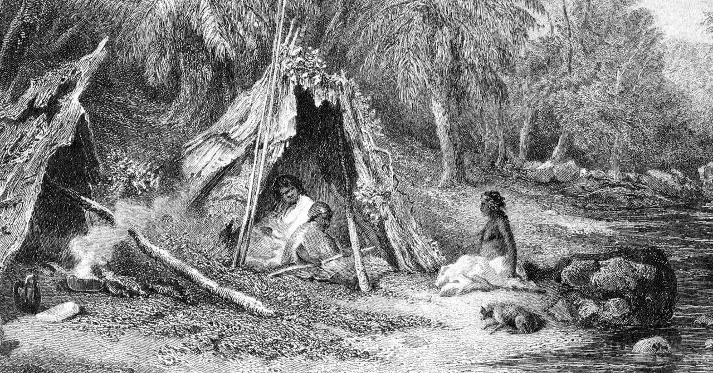
3 Stages of Economc Development
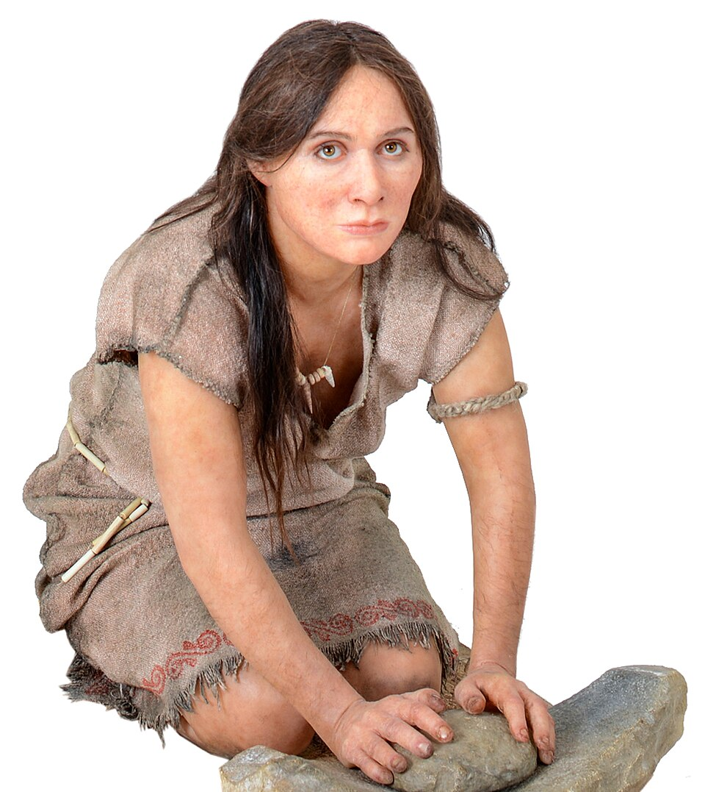
Reconstruction of a Neolithic woman grinding grain on a saddle quern, MUSE – Science Museum of Trento. Photo by Matteo De Stefano/MUSE, CC BY-SA 3.0 (Wikimedia Commons)
4 Stages of Economc Development
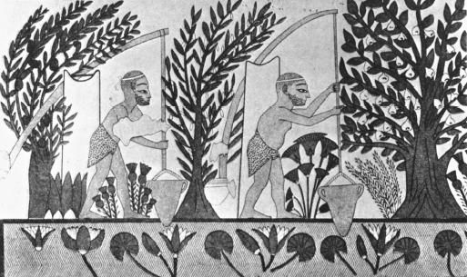
5 Division of Labor
- Quickens tremendously with the rise of cities
6 A Ruling Class
- With cities, for the first time we get a distinctive ruling class
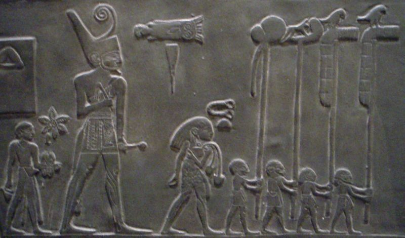
7 Urbanization Is Ongoing
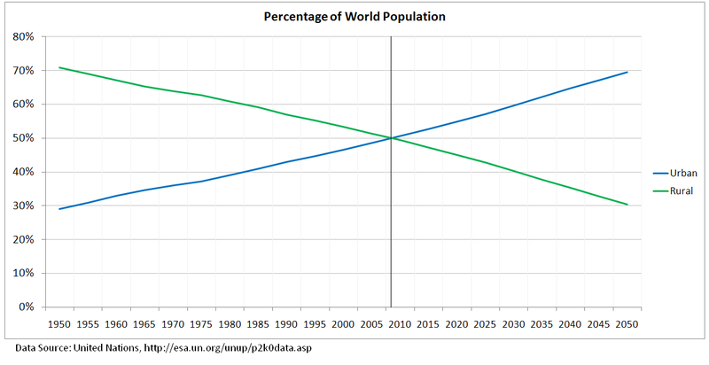
8 A Special Sort of City: The Polis
- “The whole communal life of the people, political, cultural, moral—even economic.” — H. D. F. Kitto, The Greeks (1951), ch. 5
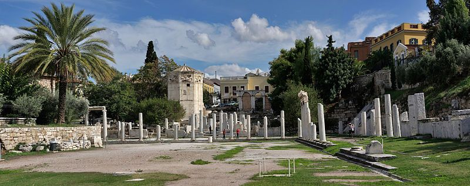
9 The Disappearance of the City
- After roughly 100 A.D. cities nearly disappear:
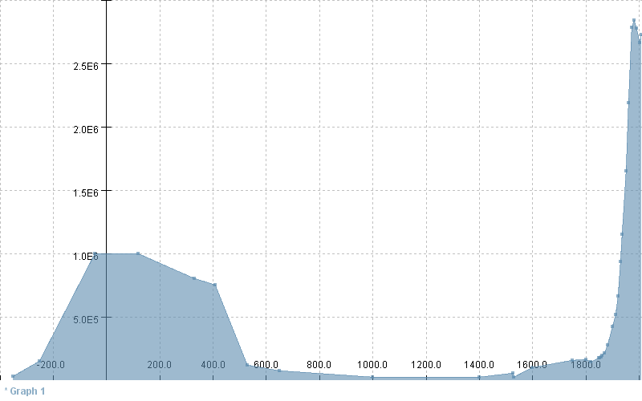
10 What Happened to Cities?
- Plague
- Disappearance of Roman law and order
- Rise of Islam cut off trade with the East
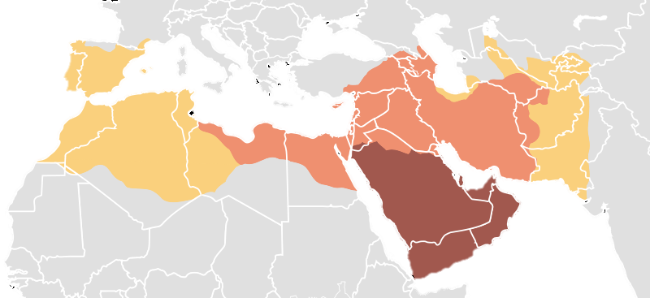
11 The Dark Ages
- Cathedral towns were the remnant of cities.
12 The Revival of Cities
- The estimated population of Europe grew from 35 to 80 million between 1000 and 1347. (Wikipedia)
- Merchants emerged as a class
- The use of money spread
- Trade revived
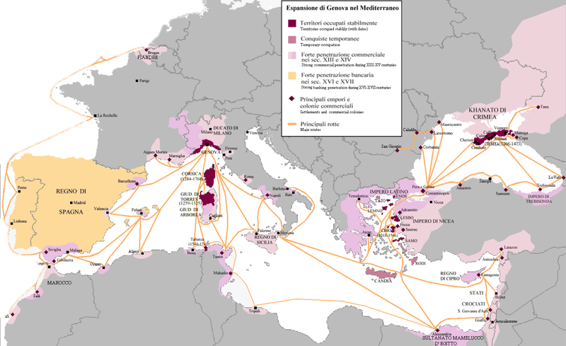
13 Results of Revival
- New notion of wealth: not land but merchant wealth
- Peasants are freed from land (“City air makes one free”)
- Lords needn’t provided troops, but can provide cash instead
- Princes become independent
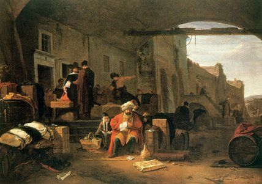
14 The Medieval City
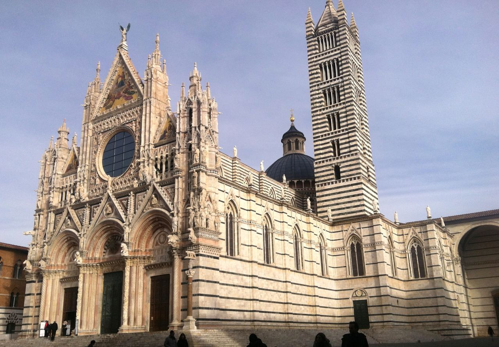
15 The Medieval City
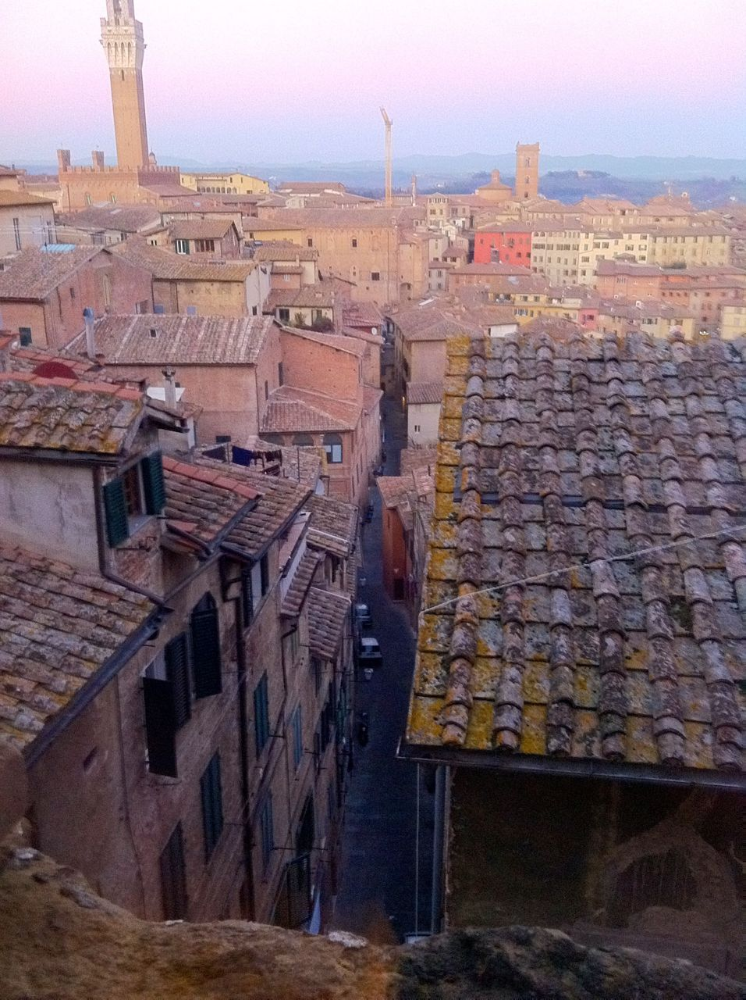
16 The Medieval City
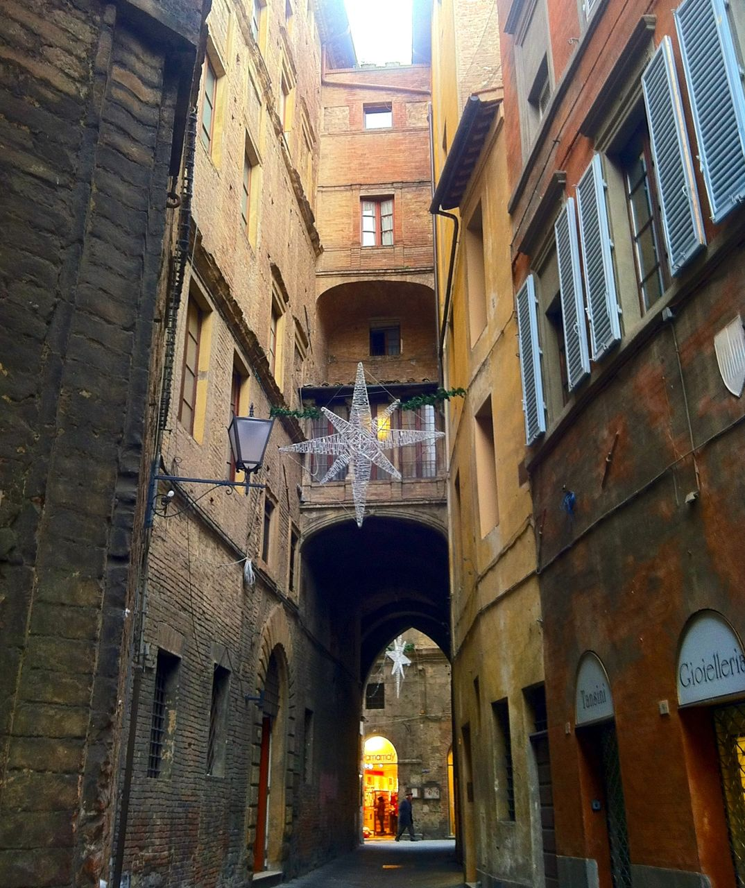
17 The Medieval City

18 The Medieval City

19 Engels: The Great Towns
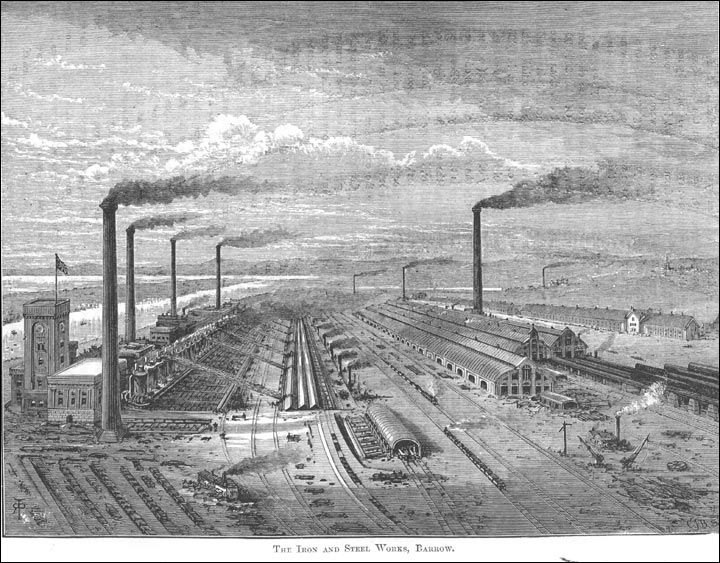
20 London’s Greatness
- The power of the 2.5 million Londoners has been multiplied by 100
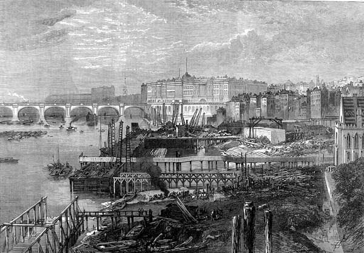
21 Cities: The brutal indifference, the unfeeling isolation...
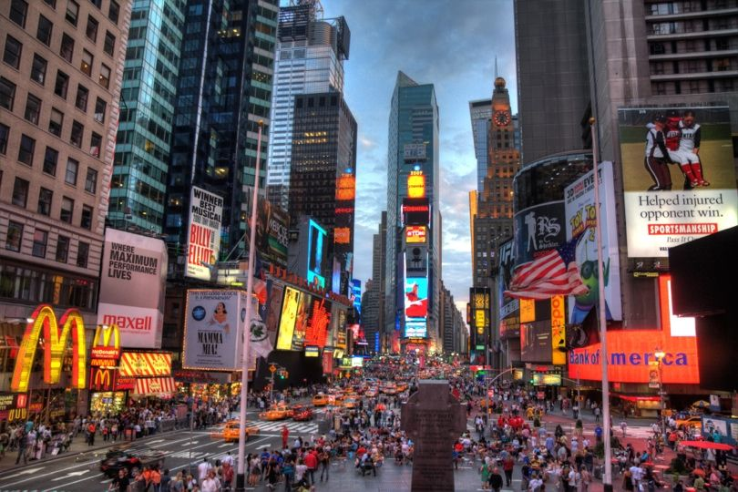
22 A Planless, Knotted Chaos of Houses
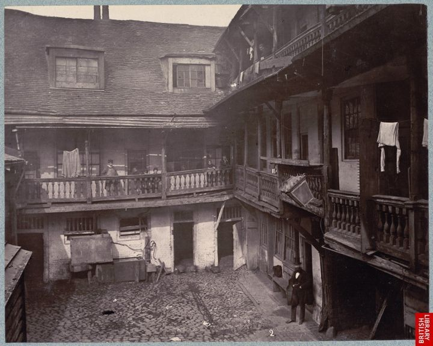
23 Only a Physically Degenerate Race...
- Robbed of all humanity, degraded, reduced morally and physically to bestiality, could feel comfortable and at home [here]:
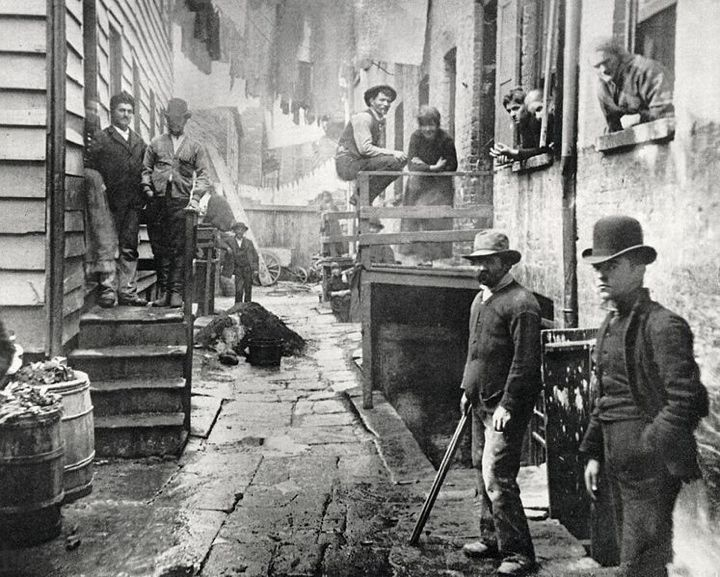